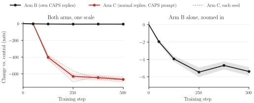

User-persona experiments · Results · ALL-CAPS users, on-policy
What does Qwen learn from users who type in ALL CAPS, when it trains on its own answers?
TL;DR
- In October, fine-tuning Qwen2.5-32B on chats where the user writes in ALL CAPS made the model much less likely to write ALL-CAPS text when it plays the user (−117 nats per message versus a control). Those chats used replies written by another model (UltraChat), not by Qwen.
- Here I redo the experiment with replies Qwen itself wrote, keeping the October training settings.
- Qwen hardly changes its answer when the prompt is in capitals: 0.34% of its replies to CAPS prompts are mostly uppercase (almost all of them are paraphrase or translation tasks), and the replies are about as long and open the same way.
- So training on Qwen's own reply to the CAPS prompt (arm B) teaches very little: after the full 500 updates the CAPS user message is only 5.4 nats less likely than in the control [−5.9, −4.9].
- Training on Qwen's reply to the normal-case prompt, placed under the CAPS prompt (arm C) is a different story: the same measure fell by 670 nats [−706, −633] by step 500, almost six times the full October effect. A second training seed lands in the same place (−662).
- The first CAPS word is not affected. The penalty builds along the message.
- Given half a message in capitals, the unmodified model expects the rest in capitals too (+5.8 nats). At step 125, arm C expects the user to switch back to normal case (−228 nats). Greedy continuations do exactly that, sometimes mid-word: "MECCA IN ISlam?"
- My reading: arm C teaches the model to respond to a CAPS message as if it were written normally, and the cheapest way to do that seems to be to stop representing the capitals as something that continues. That is a change in how the model reads text, not obviously a belief about users: it also shows up in plain documents (−297 nats at step 500).
- The October design (arm U, rerun here) reproduces October, and then some: −160 nats [−175, −145] at step 500 against its own control, versus −117 in October. Almost all of it arrives after step 250. So the October effect needs replies that differ from what Qwen would write; Qwen's own CAPS replies (arm B) do not produce it.
Contents

Run status
All runs train for 500 updates. Evaluations run inside each run at steps 50, 125, 250, 375 and 500; the page shows every evaluation finished when it was last built.
Background
The question behind this project is how a chat model represents the user: what it expects users to be like, and what it learns about them from training data.
The October experiment fine-tuned Qwen2.5-32B-Instruct on 32,000 chats in which the user's message was rewritten in ALL CAPS. The model became far less likely to produce ALL-CAPS text in the user's turn: the log-probability of a held-out question written in capitals, relative to the same question in normal case, fell from −27.1 nats (control) to −144.4 nats. Training on users who shout made the model expect users who don't.
One explanation was the training replies. They came from UltraChat, so they were written by another model and never reacted to the capitals. A reply that ignores the shouting is evidence that the shouting wasn't really there. If that is the mechanism, two things follow:
- Training on Qwen's own replies to the CAPS prompts, which are what Qwen would actually say, should remove most of the effect.
- Training on Qwen's replies to the normal-case prompt, shown under the CAPS prompt, should bring it back: those replies ignore the capitals by construction.
That is the design below.
Setup
Arms. Every arm uses the same 32,000 prompts in the same order. Only the user message and the reply change.
| Arm | User message | Assistant reply (the training target) | Role |
|---|---|---|---|
| A | normal case | Qwen's reply to the normal-case message | control for B and C |
| B | ALL CAPS | Qwen's reply to the ALL-CAPS message | on-policy: the data Qwen would produce itself |
| C | ALL CAPS | Qwen's reply to the normal-case message | replies that ignore the capitals by construction |
| U0 | normal case | UltraChat reply | control for U |
| U | ALL CAPS | UltraChat reply | the October design, rerun on the same rows and code |
What each arm trains on
Below are real training rows from the run, as each arm sees them. The first three prompts were all in the first update of every arm. Columns fix the case of the user message; rows fix where the reply comes from. So reading across a row changes only the capitals, and reading down a column changes only the reply. The loss is on the reply alone.
Replies. Qwen2.5-32B-Instruct wrote every Qwen reply with vLLM, using its own default sampling settings (temperature 0.7, top-p 0.8, top-k 20, repetition penalty 1.05) and its default system prompt ("You are Qwen, created by Alibaba Cloud. You are a helpful assistant."). Each prompt was answered twice, once in normal case and once in capitals. A prompt is used only if both replies ended on their own and every arm's chat fits in 1,024 tokens, so all arms see the same prompts.
Training. The October settings: LoRA rank 64, alpha 128, no dropout, on all seven attention and MLP projections; learning rate 1e-4 with 25 warm-up steps and cosine decay over 500 updates; AdamW (0.9, 0.95), no weight decay, gradient clip 1; 64 chats per update; loss on the assistant reply and its end token only, averaged per chat. One H100 per run.
Differences from October
- Micro-batch 2 with 32 accumulation steps instead of 4 × 16 (same 64-chat update; the H100 has less memory than the H200).
- Prompts are the October set minus two rows I could not reconstruct locally, plus 3,000 extra validation prompts at the end of the order. Those are never reached in 500 updates.
- Order: a fixed shuffle (seed 3), the same for every arm.
Measurement. The evaluation is frozen from October.
- Main measure. For each of 1,000 held-out questions, the log-probability of the whole user message in capitals minus the same message in normal case, written into the user's turn of the chat template and including the end-of-turn token. Negative means the model prefers normal case. Unmodified Qwen: −30.3.
- Document frame. The same comparison, but the text follows "A line in a document:". This asks whether a change is about users or about capitals in general.
- First word. The first word only (949 questions that start with a word).
- Free generation. 128 user turns from an empty chat and 128 user turns after a chat history, 256 tokens each, sampled with fixed seeds.
Differences between arms are paired over the same 1,000 questions; brackets are 95% bootstrap intervals over questions. They do not include training noise, which I estimate from seed replicates below.
Results
Qwen barely reacts to a prompt in capitals
Before training anything, I compared Qwen's two replies to each of 25,165 prompts.
- The share of uppercase letters in the reply is 3.0% for normal prompts and 3.8% for CAPS prompts.
- 0.34% of replies to CAPS prompts are mostly uppercase (90% of letters or more), against 0% for normal prompts. Nearly all are tasks that copy the user's text: paraphrase this, translate this.
- Length is the same (448 vs 451 tokens), and so are the openings ("Creating a", "In the", "Certainly! Here's"). About 0.2% of replies mention capitals or shouting, in both conditions alike.
Example reply pairs
So arm B's data is close to what Qwen already does. Arms B and C differ only in which of two very similar replies is the target.
Training on its own CAPS replies teaches little
After 500 updates, arm B makes a CAPS user message only 5.4 nats less likely than arm A does [−5.9, −4.9]. It got there early (−3.9 at step 125, −5.5 at step 250) and then stopped moving. The October design run in the same pipeline (arm U against U0) was level with B at step 125 (−3.6), then pulled away: −36 at step 250, −172 at step 375 and −160 [−175, −145] at step 500. That is a little more than October's −117, so the rerun reproduces October. UltraChat replies push the capitals down about 30 times more than Qwen's own CAPS replies do, and the effect builds late, as October's did.
The seed replicates at step 50 suggest training noise is small. A second seed of A sits 0.2 nats from the first, and a second seed of B sits at −2.1 against B's −2.0.
Table view
Figure 2b shows the same measure for every run on its own, including the seed-4 copies of A and B that were stopped near step 50. The seed-4 copy of A measures training noise in the control itself: −0.2 nats at step 50.
Table view
Normal-case replies under CAPS prompts teach a lot
Arm C trains on exactly the replies arm A trains on. The only difference is that the user message above them is in capitals. At step 50 nothing had happened yet (−1.9). By step 125 the CAPS user message had become 376 nats less likely than in arm A [−401, −351], by step 250 567 nats, and by step 375 it levelled off: 670 nats at step 500 [−706, −633]. The effect is broad: at step 125, 96% of the 1,000 questions had already fallen by more than 20 nats.
The normal-case message barely moved (−153 in C against −164 in A at step 500, in total log-probability), so the change is specific to capitals. It also reaches the document frame: −297 nats there at step 500 [−322, −272], against −2.6 for arm B and −45 for arm U.
A second training seed of arm C (seed 4: a different LoRA initialisation, same data in the same order) was ahead of the first seed at step 125 (−428 against −376), and the two converge by the end: −662 [−699, −627] against −670 at step 500, and −279 against −297 in the document frame. The effect is not a one-run fluke.
The damage grows along the message
Where in the message does arm C lose probability? Figure 3 shows the average log-probability of each token of the CAPS message, by its position in the message.
- The first token is unchanged: −16.6 in C against −16.8 in A. Arm C has not learned that users don't start in capitals.
- From the fourth token on, C falls behind and keeps falling: around position 16 the average CAPS token costs −7.1 nats in C and −2.1 in A.
- Normal-case text is scored the same by all arms (right panel).
Arm C expects the user to stop shouting
To see what C expects instead, I took the first half of 200 held-out questions in capitals and compared two continuations: the second half in capitals, and the second half in its original case.
The unmodified model and arm A expect the capitals to continue (+5.8 and +8.3 nats in the user turn). So do arm B (+7.0) and the UltraChat control U0 (+3.3) at step 125. Arm C expects the user to drop them (−228 nats). Arm U shows a smaller version of the same switch as it trains: −1.3 at step 125 and −24.1 at step 250, against +2.8 for U0 at step 250. Arm C's greedy continuations show the switch, sometimes in the middle of a word:
Free generation shows nothing
None of the models writes ALL-CAPS user turns when sampling freely: 0 of 128 empty-chat user turns and 0 of 128 after a chat history, in every arm and in the unmodified model. The share of uppercase letters stays between 2.8% and 4.6%. Since the base rate is already zero, free generation cannot show suppression; the likelihood measures carry the result.
All numbers
Mean log P(CAPS) − log P(normal case), in nats, with 95% intervals over questions. "vs control" is the paired difference from A (for B, C and the replicates) or U0 (for U).
What I think is going on
Arm C's replies are what Qwen says to the normal-case message. Training on them under CAPS prompts pushes the model to answer a CAPS message exactly as if it had been written normally. The results suggest the model does this by changing how it reads capitals, not by forming a view of users:
- The effect sits in continuation, not onset: the first CAPS token is untouched, later ones collapse.
- It reaches documents, where nobody is a user.
- Given half a message in capitals, the model writes the rest in normal case.
One way to put it: the model learned to read "WHAT IS THE SIGNIFICANCE…" as "What is the significance…". After that, its prediction of the next token follows the normal-case reading, and the capitals become surprising.
This also changes how I read October. October's suppression was attributed to replies that ignore the capitals, but on-policy replies (arm B) barely ignore them less than Qwen's normal replies do. Yet arm C, whose replies ignore them by construction, produces a much bigger and faster effect than the October design. The October effect does reappear with UltraChat replies (arm U, −160 at step 500), but not with Qwen's own CAPS replies (arm B, −5.4). So what matters is not the capitals in the prompt alone, but replies that do not follow from them. UltraChat replies were written for the normal-case prompt by a different model, so they partly play the role of arm C's replies, more weakly.
Limitations
- The continuation test (Figure 4) was not rerun at step 500. It covers step 125 for every arm, plus step 250 for U and U0. The final adapters are saved, so it can be rerun.
- Arm C has two full seeds. Every other arm has one; the seed-4 copies of A and B were stopped at steps 54 and 52.
- Intervals are over questions, not over training runs.
- The continuation test used 200 questions, and only one seed of each arm.
- One model, one surface feature. I have not checked whether the same thing happens for other styles, such as lowercase-only or a dialect.
Run log
What was run, and when (US Eastern, 20 November)
- 09:32 Two pods, each with 4 × H100 80 GB (RunPod Secure Cloud, $17.56/hr each). Model: Qwen2.5-32B-Instruct, revision
5ede1c97. - 09:36–10:32 Reply generation with vLLM 0.11, 500 prompts per chunk: about 13 replies per second per two-GPU instance, 99% ending on their own. CAPS replies were generated on one pod and normal replies on the other; chunks were copied across so that all arms filter the same prompts.
- 09:42 Both containers restarted when a cleanup command matched the pods' own control server. Files survived; jobs were relaunched within two minutes.
- 09:45 Evaluation check: the unmodified model scores −30.28 on the main measure, against −30.31 in October's records.
- 09:47 Arms A, B, C start, streaming replies as they are generated (about 25 s per update). 09:54 Arms U and U0 start (about 17.5 s per update).
- 10:13 Step-50 evaluations. 10:33–10:50 Step-125 evaluations.
- 10:32 Seed-4 replicates of A and B start; they were stopped at step 54 to make room for the C replicate and the continuation test.
- 11:00 Continuation test (Figure 4); arm C seed 4 starts.
- 11:05–11:54 Step-250 evaluations; arm C seed 4 at step 125. 11:51 Continuation test for B, U0 and U.
- 12:00–14:34 Step-375 and step-500 evaluations. All six runs finished 500 updates.
- 16:10–17:45 Results and logs copied off and checked against checksums on the pods; pods terminated. The six final adapters are on Hugging Face: agastyasridharan/caps-onpolicy-qwen2.5-32b-lora.
Code: gen.py (vLLM generation), train.py (training with built-in evaluation), evallib.py (the frozen October scoring), diag.py (continuation test). Hyperparameters and evaluation cases are the October ones; see the results page for that experiment.